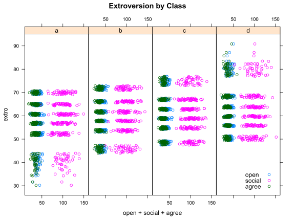
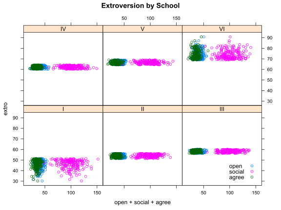
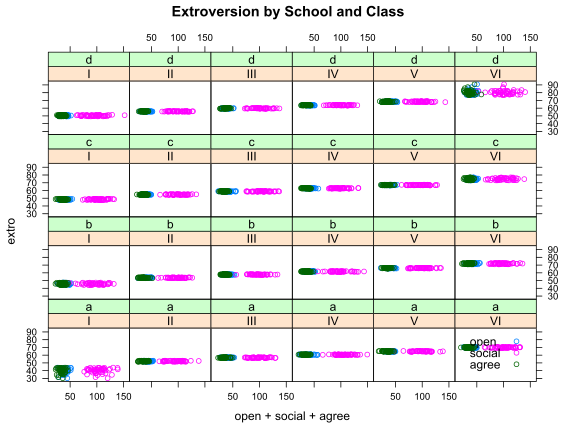
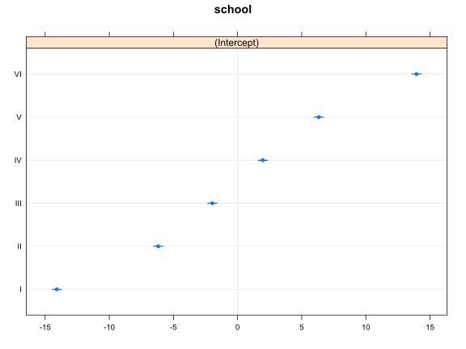
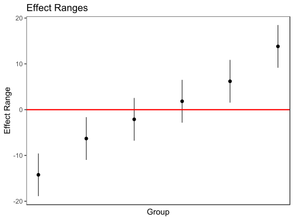
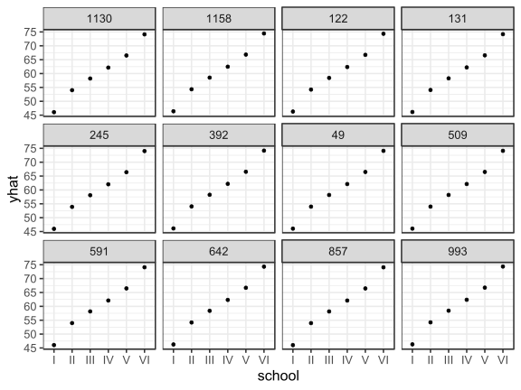
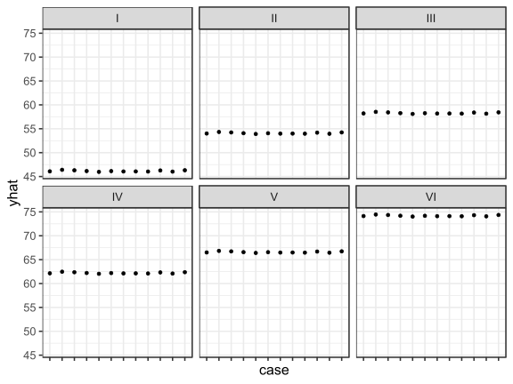

First of all, be warned, the terminology surrounding multilevel models is vastly inconsistent. For example, multilevel models themselves may be referred to as hierarchical linear models, random effects models, multilevel models, random intercept models, random slope models, or pooling models. Depending on the discipline, software used, and the academic literature many of these terms may be referring to the same general modeling strategy. In this tutorial I will attempt to provide a user guide to multilevel modeling by demonstrating how to fit multilevel models in R and by attempting to connect the model fitting procedure to commonly used terminology used regarding these models.
We will cover the following topics:
merMod objectsmerMod objectsmerMod objectsIf you haven’t already, make sure you head over to the Getting Started With Multilevel Models tutorial in order to ensure you have set up your environment correctly and installed all the necessary packages. The tl;dr is that you will need:
lme4 package (install.packages("lme4"))Multilevel models are appropriate for a particular kind of data structure where units are nested within groups (generally 5+ groups) and where we want to model the group structure of the data. For our introductory example we will start with a simple example from the lme4 documentation and explain what the model is doing. We will use data from Jon Starkweather at the University of North Texas. Visit the excellent tutorial available here for more.
library(lme4) # load library
library(arm) # convenience functions for regression in R
lmm.data <- read.table("http://bayes.acs.unt.edu:8083/BayesContent/class/Jon/R_SC/Module9/lmm.data.txt",
header=TRUE, sep=",", na.strings="NA", dec=".", strip.white=TRUE)
#summary(lmm.data)
head(lmm.data)## id extro open agree social class school
## 1 1 63.69356 43.43306 38.02668 75.05811 d IV
## 2 2 69.48244 46.86979 31.48957 98.12560 a VI
## 3 3 79.74006 32.27013 40.20866 116.33897 d VI
## 4 4 62.96674 44.40790 30.50866 90.46888 c IV
## 5 5 64.24582 36.86337 37.43949 98.51873 d IV
## 6 6 50.97107 46.25627 38.83196 75.21992 d IHere we have data on the extroversion of subjects nested within classes and within schools.
Let’s understand the structure of the data a bit before we begin:
str(lmm.data)## 'data.frame': 1200 obs. of 7 variables:
## $ id : int 1 2 3 4 5 6 7 8 9 10 ...
## $ extro : num 63.7 69.5 79.7 63 64.2 ...
## $ open : num 43.4 46.9 32.3 44.4 36.9 ...
## $ agree : num 38 31.5 40.2 30.5 37.4 ...
## $ social: num 75.1 98.1 116.3 90.5 98.5 ...
## $ class : Factor w/ 4 levels "a","b","c","d": 4 1 4 3 4 4 4 4 1 2 ...
## $ school: Factor w/ 6 levels "I","II","III",..: 4 6 6 4 4 1 3 4 3 1 ...Here we see we have two possible grouping variables – class and school. Let’s explore them a bit further:
table(lmm.data$class)##
## a b c d
## 300 300 300 300table(lmm.data$school)##
## I II III IV V VI
## 200 200 200 200 200 200table(lmm.data$class, lmm.data$school)##
## I II III IV V VI
## a 50 50 50 50 50 50
## b 50 50 50 50 50 50
## c 50 50 50 50 50 50
## d 50 50 50 50 50 50This is a perfectly balanced dataset. In all likelihood you aren’t working with a perfectly balanced dataset, but we’ll explore the implications for that in the future. For now, let’s plot the data a bit. Using the excellent xyplot function in the lattice package, we can explore the relationship between schools and classes across our variables.
require(lattice)
xyplot(extro ~ open + social + agree | class, data = lmm.data,
auto.key = list(x = .85, y = .035, corner = c(0, 0)),
layout = c(4,1), main = "Extroversion by Class") 
Here we see that within classes there are clear stratifications and we also see that the social variable is strongly distinct from the open and agree variables. We also see that class a and class d have significantly more spread in their lowest and highest bands respectively. Let’s next plot the data by school.
xyplot(extro ~ open + social + agree | school, data = lmm.data,
auto.key = list(x = .85, y = .035, corner = c(0, 0)),
layout = c(3, 2), main = "Extroversion by School") 
By school we see that students are tightly grouped, but that school I and school VI show substantially more dispersion than the other schools. The same pattern among our predictors holds between schools as it did between classes. Let’s put it all together:
xyplot(extro ~ open + social + agree | school + class, data = lmm.data,
auto.key = list(x = .85, y = .035, corner = c(0, 0)),
main = "Extroversion by School and Class") 
Here we can see that school and class seem to closely differentiate the relationship between our predictors and extroversion.
In the last tutorial we fit a series of random intercept models to our nested data. We will examine the lmerMod object produced when we fit this model in much more depth in order to understand how to work with mixed effect models in R. We start by fitting a the basic example below grouped by class:
MLexamp1 <- lmer(extro ~ open + agree + social + (1|school), data=lmm.data)
class(MLexamp1)## [1] "lmerMod"
## attr(,"package")
## [1] "lme4"First, we see that MLexamp1 is now an R object of the class lmerMod. This lmerMod object is an S4 class, and to explore its structure, we use slotNames:
slotNames(MLexamp1)## [1] "resp" "Gp" "call" "frame" "flist" "cnms" "lower" "theta" "beta"
## [10] "u" "devcomp" "pp" "optinfo"#showMethods(classes="lmerMod")Within the lmerMod object we see a number of objects that we may wish to explore. To look at any of these, we can simply type MLexamp1@ and then the slot name itself. For example:
MLexamp1@call # returns the model call## lmer(formula = extro ~ open + agree + social + (1 | school),
## data = lmm.data)MLexamp1@beta # returns the betas## [1] 59.116514199 0.009750941 0.027788360 -0.002151446class(MLexamp1@frame) # returns the class for the frame slot## [1] "data.frame"head(MLexamp1@frame) # returns the model frame## extro open agree social school
## 1 63.69356 43.43306 38.02668 75.05811 IV
## 2 69.48244 46.86979 31.48957 98.12560 VI
## 3 79.74006 32.27013 40.20866 116.33897 VI
## 4 62.96674 44.40790 30.50866 90.46888 IV
## 5 64.24582 36.86337 37.43949 98.51873 IV
## 6 50.97107 46.25627 38.83196 75.21992 IThe merMod object has a number of methods available – too many to enumerate here. But, we will go over some of the more common in the list below:
methods(class = "merMod")## [1] anova as.function coef confint cooks.distance deviance
## [7] df.residual display drop1 extractAIC extractDIC family
## [13] fitted fixef formula getL getME hatvalues
## [19] influence isGLMM isLMM isNLMM isREML logLik
## [25] mcsamp model.frame model.matrix ngrps nobs plot
## [31] predict print profile qqmath ranef refit
## [37] refitML rePCA residuals rstudent se.coef show
## [43] sigma.hat sigma sim simulate standardize summary
## [49] terms update VarCorr vcov weights
## see '?methods' for accessing help and source codeA common need is to extract the fixed effects from a merMod object. fixef extracts a named numeric vector of the fixed effects, which is handy.
fixef(MLexamp1)## (Intercept) open agree social
## 59.116514199 0.009750941 0.027788360 -0.002151446If you want to get a sense of the p-values or statistical significance of these parameters, first consult the lme4 help by running ?mcmcsamp for a rundown of various ways of doing this. One convenient way built into the package is:
confint(MLexamp1, level = 0.99)## 0.5 % 99.5 %
## .sig01 4.91840325 23.88757695
## .sigma 2.53286648 2.81455985
## (Intercept) 46.27750884 71.95609747
## open -0.02464506 0.04414924
## agree -0.01163700 0.06721354
## social -0.01492690 0.01062510From here we can see first that our fixed effect parameters overlap 0 indicating no evidence of an effect. We can also see that .sig01, which is our estimate of the variability in the random effect, is very large and very widely defined. This indicates we may have a lack of precision between our groups - either because the group effect is small between groups, we have too few groups to get a more precise estimate, we have too few units within each group, or a combination of all of the above.
Another common need is to extract the residual standard error, which is necessary for calculating effect sizes. To get a named vector of the residual standard error:
sigma(MLexamp1)## [1] 2.670886For example, it is common practice in education research to standardize fixed effects into “effect sizes” by dividing the fixed effect paramters by the residual standard error, which can be accomplished in lme4 easily:
fixef(MLexamp1) / sigma(MLexamp1)## (Intercept) open agree social
## 22.1336707437 0.0036508262 0.0104041726 -0.0008055176From this, we can see that our predictors of openness, agreeableness and social are virtually useless in predicting extroversion – as our plots showed. Let’s turn our attention to the random effects next.
In all likelihood you fit a mixed-effect model because you are directly interested in the group-level variation in your model. It is not immediately clear how to explore this group level variation from the results of summary.merMod. What we get from this output is the variance and the standard deviation of the group effect, but we do not get effects for individual groups. This is where the ranef function comes in handy.
ranef(MLexamp1)## $school
## (Intercept)
## I -14.090991
## II -6.183368
## III -1.970700
## IV 1.965938
## V 6.330710
## VI 13.948412
##
## with conditional variances for "school"Running the ranef function gives us the intercepts for each school, but not much additional information – for example the precision of these estimates. To do that, we need some additional commands:
re1 <- ranef(MLexamp1, condVar=TRUE) # save the ranef.mer object
class(re1)## [1] "ranef.mer"attr(re1[[1]], which = "postVar")## , , 1
##
## [,1]
## [1,] 0.0356549
##
## , , 2
##
## [,1]
## [1,] 0.0356549
##
## , , 3
##
## [,1]
## [1,] 0.0356549
##
## , , 4
##
## [,1]
## [1,] 0.0356549
##
## , , 5
##
## [,1]
## [1,] 0.0356549
##
## , , 6
##
## [,1]
## [1,] 0.0356549The ranef.mer object is a list which contains a data.frame for each group level. The dataframe contains the random effects for each group (here we only have an intercept for each school). When we ask lme4 for the conditional variance of the random effects it is stored in an attribute of those dataframes as a list of variance-covariance matrices.
This structure is indeed complicated, but it is powerful as it allows for nested, grouped, and cross-level random effects. Also, the creators of lme4 have provided users with some simple shortcuts to get what they are really interested in out of a ranef.mer object.
re1 <- ranef(MLexamp1, condVar=TRUE, whichel = "school")
print(re1)## $school
## (Intercept)
## I -14.090991
## II -6.183368
## III -1.970700
## IV 1.965938
## V 6.330710
## VI 13.948412
##
## with conditional variances for "school"dotplot(re1)## $school
This graphic shows a dotplot of the random effect terms, also known as a caterpillar plot. Here you can clearly see the effects of each school on extroversion as well as their standard errors to help identify how distinct the random effects are from one another. Interpreting random effects is notably tricky, but for assistance I would recommend looking at a few of these resources:
A common econometric approach is to create what are known as empirical Bayes estimates of the group-level terms. Unfortunately there is not much agreement about what constitutes a proper standard error for the random effect terms or even how to consistently define empirical Bayes estimates.1 However, in R there are a few additional ways to get estimates of the random effects that provide the user with information about the relative sizes of the effects for each unit and the precision in that estimate. To do this, we use the sim function in the arm package.2
# A function to extract simulated estimates of random effect paramaters from
# lme4 objects using the sim function in arm
# whichel = the character for the name of the grouping effect to extract estimates for
# nsims = the number of simulations to pass to sim
# x = model object
REsim <- function(x, whichel=NULL, nsims){
require(plyr)
mysim <- sim(x, n.sims = nsims)
if(missing(whichel)){
dat <- plyr::adply(mysim@ranef[[1]], c(2, 3), plyr::each(c(mean, median, sd)))
warning("Only returning 1st random effect because whichel not specified")
} else{
dat <- plyr::adply(mysim@ranef[[whichel]], c(2, 3), plyr::each(c(mean, median, sd)))
}
return(dat)
}
REsim(MLexamp1, whichel = "school", nsims = 1000)## X1 X2 mean median sd
## 1 I (Intercept) -14.088205 -14.287477 3.923270
## 2 II (Intercept) -6.183570 -6.369473 3.937168
## 3 III (Intercept) -1.956252 -2.078317 3.925270
## 4 IV (Intercept) 1.968866 1.843241 3.930132
## 5 V (Intercept) 6.344076 6.142423 3.925949
## 6 VI (Intercept) 13.954781 13.770879 3.919504The REsim function returns for each school the level name X1, the estimate name, X2, the mean of the estimated values, the median, and the standard deviation of the estimates.
Another convenience function can help us plot these results to see how they compare to the results of dotplot:
# Dat = results of REsim
# scale = factor to multiply sd by
# var = character of "mean" or "median"
# sd = character of "sd"
plotREsim <- function(dat, scale, var, sd){
require(eeptools)
dat[, sd] <- dat[, sd] * scale
dat[, "ymax"] <- dat[, var] + dat[, sd]
dat[, "ymin"] <- dat[, var] - dat[, sd]
dat[order(dat[, var]), "id"] <- c(1:nrow(dat))
ggplot(dat, aes_string(x = "id", y = var, ymax = "ymax",
ymin = "ymin")) +
geom_pointrange() + theme_dpi() +
labs(x = "Group", y = "Effect Range", title = "Effect Ranges") +
theme(panel.grid.major = element_blank(), panel.grid.minor = element_blank(),
axis.text.x = element_blank(), axis.ticks.x = element_blank()) +
geom_hline(yintercept = 0, color = I("red"), size = I(1.1))
}
plotREsim(REsim(MLexamp1, whichel = "school", nsims = 1000), scale = 1.2,
var = "mean", sd = "sd")
This presents a more conservative view of the variation between random effect components. Depending on how your data was collected and your research question, alternative ways of estimating these effect sizes are possible. However, proceed with caution.3
Another approach recommended by the authors of lme4 involves the RLRsim package. Using this package we can test whether or not inclusion of the random effects improves model fit and we can evaluate the p-value of additional random effect terms using a likelihood ratio test based on simulation.4
library(RLRsim)
m0 <- lm(extro ~ agree + open + social, data =lmm.data) # fit the null model
exactLRT(m = MLexamp1, m0 = m0)##
## simulated finite sample distribution of LRT. (p-value based on 10000 simulated values)
##
## data:
## LRT = 2957.7, p-value < 2.2e-16Here exactLRT issues a warning because we originally fit the model with REML instead of full maximum likelihood. Fortunately, the refitML function in lme4 allows us to easily refit our model using full maximum likelihood to conduct an exact test easily.
mA <- refitML(MLexamp1)
exactLRT(m= mA, m0 = m0)##
## simulated finite sample distribution of LRT. (p-value based on 10000 simulated values)
##
## data:
## LRT = 2957.8, p-value < 2.2e-16Here we can see that the inclusion of our grouping variable is significant, even though the effect of each individual group may be substantively small and/or imprecisely measured. This is important in understanding the correct specification of the model. Our next tutorial will cover specification tests like this in more detail.
How do interpret the substantive impact of our random effects? This is often critical in observation work trying to use a multilevel structure to understand the impact that the grouping can have on the individual observation. To do this we select 12 random cases and then we simulate their predicted value of extro if they were placed in each of the 6 schools. Note, that this is a very simple simulation just using the mean of the fixed effect and the conditional mode of the random effect and not replicating or sampling to get a sense of the variability. This will be left as an exercise to the reader and/or a future tutorial!
# Simulate
# Let's create 12 cases of students
#
#sample some rows
simX <- sample(lmm.data$id, 12)
simX <- lmm.data[lmm.data$id %in% simX, c(3:5)] # get their data
# add an intercept
simX[, "Intercept"] <- 1
simX <- simX[, c(4, 1:3)] # reorder
simRE <- REsim(MLexamp1, whichel = "school", nsims = 1000) # simulate randome effects
simX$case <- row.names(simX) # create a case ID
# expand a grid of case IDs by schools
simDat <- expand.grid(case = row.names(simX), school = levels(lmm.data$school))
simDat <- merge(simX, simDat) # merge in the data
# Create the fixed effect predictor
simDat[, "fepred"] <- (simDat[, 2] * fixef(MLexamp1)[1]) + (simDat[, 3] * fixef(MLexamp1)[2]) +
(simDat[, 4] * fixef(MLexamp1)[3]) + (simDat[, 5] * fixef(MLexamp1)[4])
# Add the school effects
simDat <- merge(simDat, simRE[, c(1, 3)], by.x = "school", by.y="X1")
simDat$yhat <- simDat$fepred + simDat$mean # add the school specific interceptNow that we have set up a simulated dataframe, let’s plot it, first by case:
qplot(school, yhat, data = simDat) + facet_wrap(~case) + theme_dpi()
This plot shows us that within each plot, representing a case, there is tremendous variation by school. So, moving each student into a different school has large effects on the extroversion score. But, does each case vary at each school?
qplot(case, yhat, data = simDat) + facet_wrap(~school) + theme_dpi() +
theme(axis.text.x = element_blank())
Here we can clearly see that within each school the cases are relatively the same indicating that the group effect is larger than the individual effects.
These plots are useful in demonstrating the relative importance of group and individual effects in a substantive fashion. Even more can be done to make the the graphs more informative, such as placing references to the total variability of the outcome and also looking at the distance moving groups moves each observation from its true value.
lme4 provides a very powerful object-oriented toolset for dealing with mixed effect models in R. Understanding model fit and confidence intervals of lme4 objects requires some diligent research and the use of a variety of functions and extensions of lme4 itself. In our next tutorial we will explore how to identify a proper specification of a random-effect model and Bayesian extensions of the lme4 framework for difficult to specify models. We will also explore the generalized linear model framework and the glmer function for generalized linear modeling with multi-levels.
print(sessionInfo(),locale=FALSE)## R version 3.5.3 (2019-03-11)
## Platform: x86_64-w64-mingw32/x64 (64-bit)
## Running under: Windows 10 x64 (build 17134)
##
## Matrix products: default
##
## attached base packages:
## [1] stats graphics grDevices utils datasets methods base
##
## other attached packages:
## [1] RLRsim_3.1-3 eeptools_1.2.2 ggplot2_3.1.1 plyr_1.8.4 lattice_0.20-38 arm_1.10-1
## [7] MASS_7.3-51.4 lme4_1.1-21 Matrix_1.2-17 knitr_1.22
##
## loaded via a namespace (and not attached):
## [1] zoo_1.8-5 tidyselect_0.2.5 xfun_0.6 purrr_0.3.2 splines_3.5.3
## [6] colorspace_1.4-1 htmltools_0.3.6 yaml_2.2.0 mgcv_1.8-28 rlang_0.3.4
## [11] nloptr_1.2.1 pillar_1.3.1 foreign_0.8-71 glue_1.3.1 withr_2.1.2
## [16] sp_1.3-1 stringr_1.4.0 munsell_0.5.0 gtable_0.3.0 coda_0.19-2
## [21] evaluate_0.13 labeling_0.3 maptools_0.9-5 lmtest_0.9-37 vcd_1.4-4
## [26] Rcpp_1.0.1 scales_1.0.0 abind_1.4-5 digest_0.6.18 stringi_1.4.3
## [31] dplyr_0.8.0.1 grid_3.5.3 tools_3.5.3 magrittr_1.5 lazyeval_0.2.2
## [36] tibble_2.1.1 crayon_1.3.4 pkgconfig_2.0.2 data.table_1.12.2 assertthat_0.2.1
## [41] minqa_1.2.4 rmarkdown_1.12 R6_2.4.0 boot_1.3-22 nlme_3.1-139
## [46] compiler_3.5.3[See message from lme4 co-author Doug Bates on this subject]. (https://stat.ethz.ch/pipermail/r-sig-mixed-models/2009q4/002984.html)↩
Andrew Gelman and Yu-Sung Su (2014). arm: Data Analysis Using Regression and Multilevel/Hierarchical Models. R package version 1.7-03. http://CRAN.R-project.org/package=arm↩
There are also an extensive series of references available in the References section of the help by running ?exactLRT and ?exactRLRT.↩